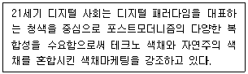
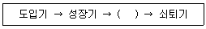
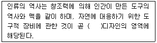
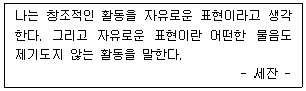
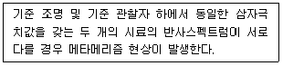
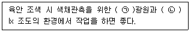

컬러리스트기사 (2020-08-22 기출문제)
1과목: 색채심리 마케팅
1. 색채의 상징에 대한 설명이 틀린 것은?
- 국기에서의 빨강은 정열, 혁명을 상징한다.
- 각 도시에서도 상징적인 색채를 대표색으로 사용할 수 있다.
- 차크라(chakra)에서 초록은 사랑과 “파”음을 상징한다.
- 국기가 국가의 상징이 된 것은 1차 세계대전 이후이다.
(정답률: 68%)

2. 색채 조사를 실시하는 목적과 방법에 대한 설명 중 틀린 것은?
- 현대 사회 트렌드가 빠르게 변화되어 색채 선호도 조사실시 주기가 짧아지고 있다.
- 선호색에 대한 조사 시 색채 견본은 최대한 많이 제시하여 정확성을 높인다.
- SD법으로 색채 조사를 실시할 경우 색채를 평가하는 반대되는 의미를 갖는 형용사 쌍으로 조사한다.
- 요인 분석을 통한 색채 조사는 색의 삼속성이 어떤 감성요인과 관련이 높은지 분석하기 적절한 방법이다.
(정답률: 71%)
3. 브랜드 색채 전략 중 관리 과정 설명으로 틀린 것은?
- 브랜드 설정, 인지도 향상 – 브랜드 차별화
- 브랜드 의사결정 – 브랜드명 결정
- 브랜드 로열티 확립 – 상품 충성도
- 브랜드 파워 – 매출과 이익의 증대
(정답률: 71%)
4. 매슬로우(A.H. Maslow)의 마케팅 욕구에 해당하지 않은 요인은?
- 자아실현
- 소속감
- 안전과 보호
- 미술감상
(정답률: 89%)
5. 마케팅에서 시장세분화의 기준 중 인구통계학적 속성과 관련이 없는 것은?
- 소비자 계층을 묘사하는데 효과적인 정보 제공
- 시장을 세분화할 수 있는 정보 제공
- 물가지수 정보 제공
- 소비자 라이프스타일 정보 제공
(정답률: 80%)
6. 색채 시장조사 방법에 대한 설명 중 틀린 것은?
- 회사의 내부 자료와 타기관의 외부 자료를 1차 자료로 이용하는 것이 좋다.
- 설문지 조사는 정확성, 신뢰도의 측면은 장점이지만 비용, 시간, 인력이 많이 드는 단점이 있다.
- 스트리트 패션의 색재조사는 일종의 관찰법이다.
- 설문에 답하도록 하는 질문지법에는 색명이나 색 견본을 제시하는 것이 좋다.
(정답률: 67%)
7. 표본조사 방법에 관한 설명 중 틀린 것은?
- 표본은 편의(bias)가 없는 조사를 위해 무작위로 추출된다.
- 집락표본 추출은 모든 표본단위를 포괄하는 대형 모집단을 이용한다.
- 표본에 관련된 오차는 모집단의 크기에 좌우되는 것이 아니라 표본의 크기에 따른다.
- 조사방법에는 직접 방문의 개별면접조사와 전화 등의 매체를 통한 조사가 있다.
(정답률: 62%)
8. 색의 감정효과에 대한 설명이 옳은 것은?
- 강력한 원색은 피로감이 생기기 쉽고, 자극시간이 길게 느껴진다.
- 한색계통의 연한색은 피로감이 생기기 쉽고, 자극시간이 길게 느껴진다.
- 난색계통의 저명도 색은 진출되어 보인다.
- 한색계통의 저명도 색은 활기차 보인다.
(정답률: 81%)
9. 색채 치료에 관한 설명 중 틀린 것은?
- 색채를 이용하여 인간의 오감을 자극하여 정신적 스트레스와 심리증세를 치유하는 방법이다.
- 인도의 전통적인 치유 방법에서는 인체를 7개의 챠크라(chakra)로 나누고 각 챠크라에는 고유의 색이 있다.
- 색채 치료의 일반적 경향에서 주황은 신경계를 강화시키며 근육에너지를 생성시키고 소화 기간의 활력을 준다.
- 빛은 인간에게 중요한 에너지 근원이 되고 시각을 통해 몸속에서 호르몬 생성을 촉진시킨다.
(정답률: 52%)
10. 소비자의 구매심리과정을 바르게 나열한 것은?
- 주의 → 흥미 → 욕망 → 기억 → 행동
- 흥미 → 주의 → 욕망 → 기억 → 행동
- 주의 → 흥미 → 기억 → 욕망 → 행동
- 흥미 → 주의 → 욕망 → 행동 → 기억
(정답률: 65%)
11. 다음이 설명하는 색채 마케팅 전략의 요인은?

- 인구 통계적 환경
- 기술적 환경
- 경제적 환경
- 역사적 환경
(정답률: 76%)
12. 형광등 또는 백열등과 같은 다양한 조명 아래에서도 사과의 빨간색이 달리 지각되지 않는 현상은?
- 착시
- 색채의 주관성
- 페흐너 효과
- 색채 항상성
(정답률: 80%)
13. 시장세분화(Market Segmentation)의 조건으로 옳은 것은?
- 유통가능성, 접근가능성, 실질성, 실행가능성
- 유통가능성, 안정성, 실질성, 실행가능성
- 색채선호성, 계절기후성, 실질성, 실행가능성
- 측정가능성, 접근가능성, 실질성, 실행가능성
(정답률: 45%)
14. 컬러 마케팅의 직접적인 효과로 보기 어려운 것은?
- 브랜드 가치의 업그레이드
- 기업의 아이덴티티 형성
- 기업의 매출 증대
- 브랜드 기획력 향상
(정답률: 73%)
15. 소비자 의사결정 과정에 해당하지 않는 것은?
- 정보탐색
- 대안평가
- 흥미욕구
- 구매결정
(정답률: 46%)
16. 인도의 과거신분제도에서 가장 높은 위치의 계급을 상징하는 색부터 차례대로 나열한 것은?
- 빨강 → 노랑 → 하양 → 검정
- 검정 → 빨강 → 노랑 → 하양
- 하양 → 노랑 → 빨강 → 검정
- 하양 → 빨강 → 노랑 → 검정
(정답률: 50%)
17. 제품의 라이프 사이클 단계로 ( )에 들어갈 알맞은 것은?

- 정체기
- 상승기
- 성숙기
- 정리기
(정답률: 86%)
18. 연령에 따른 색채 선호에 관한 연구 조사 결과 설명으로 틀린 것은?
- 연령별 색채 선호는 색상에서 가장 뚜렷한 차이를 보인다.
- 아동기에는 장파장인 붉은색 계열의 선호가 높으나 어른이 되면서 단파장의 파란색 계열로 선호가 변화하는 경우가 많다.
- 유아는 가장 최근에 인지한 색을 선호하는 경향이 높다.
- 유아기에는 선호하는 색채가 소수의 색채에 집중되나 연령이 증가하면서 다양한 색채로 선호 색채가 변화한다.
(정답률: 41%)
19. 색채 시장조사 기법 중 서베이(Survey)조사에 대한 설명으로 틀린 것은?
- 일반 소비자들의 제품구매 및 이용 상황에 대한 정보를 수집하고 분석하는 방법이다.
- 설문지를 이용하여 표본으로 선정된 조사대상자들은 대상으로 자료를 수집하는 방법이다.
- 특정 상황에서 직접적으로 관찰하여 자료를 수집하는 방법이다.
- 기업의 전반적 마케팅 전략수립의 기본 자료를 수집하기 위한 조사로 활용된다.
(정답률: 78%)
20. 어떤 소리를 듣게 되면 색이나 빛이 눈앞에 떠오르는 현상은?
- 색광
- 색감
- 색청
- 색톤
(정답률: 83%)
2과목: 색채디자인
21. 색조에 의한 패션디자인 계획 중 deep, dark, dark grayish 와 관련이 없는 것은?
- 전체적으로 화려함이 없고 단단하며 격조있는 느낌
- 안정되면서도 무거운 남성적 감정을 느끼게 함
- 복고품의 패션트렌드와 어울리는 색조
- 주로 스포츠웨어나 테마의상 제작에 사용
(정답률: 62%)
22. 1919년 독일 바이마르에서 창립된 바우하우스와 관련이 없는 것은?
- 설립자는 건축가 윌터 그로피우스이다.
- 교과는 크게 공작교육과 형태교육으로 나누어져 있었다.
- 1923년 이후는 기계공업과 연계를 통한 예술과의 통합이 강조되었다.
- 대칭형의 기계적 추상형태와 기하학적 직선을 지향하였다.
(정답률: 59%)
23. 굿디자인의 조건에 대한 설명 중 틀린 것은?
- 합목적성 : 디자인의 지성적 요소를 결정하며 개인 성향이 강하게 나타난다.
- 심미성 : 디자인의 감정적 요소를 결정하며 국가, 집단별로 다르게 나타난다.
- 독창성 : 리디자인도 창조에 속한다.
- 경제성 : 최소의 투자로 최대의 효과를 얻는다.
(정답률: 63%)
24. 인간의 건강을 증진시키기 위한 액티브디자인 가이드라인이 개발된 도시는?
- 런던
- 파리
- 뉴욕
- 시카고
(정답률: 60%)
25. 설계도 보완을 위해 작업순서 방법, 마감정도, 제품규격, 품질 등을 명시하는 것은?
- 견적서
- 평면도
- 시방서
- 설명도
(정답률: 57%)
26. 다음의 ( )에 알맞은 말은?

- 시각
- 환경
- 제품
- 멀티미디어
(정답률: 73%)
27. 건물공간에 따른 색의 선택에 관한 설명 중 가장 적합하지 않은 것은?
- 사무실은 30%의 반사율을 가진 은회색(warm gray)이 적당하다.
- 상점에서 상품자체가 밝은 색채를 가진 경우 일반적으로 그 상품을 부드럽게 보이기 위해 같은 색채를 배경으로 한다.
- 병원 수술실은 연한 청녹색을 사용한다.
- 학교색채에 있어 밝은 연녹색, 물색의 벽은 집중력을 높여준다.
(정답률: 73%)
28. 컬러 이미지 스케일 사용의 장점을 가장 옳게 설명한 것은?
- 색채의 이성적 분류가 가능
- 감성을 객관적이고 논리적으로 판단
- 유행색 유추가 용이
- 다양한 색명의 사용이 가능
(정답률: 54%)
29. 다음에서 설명하는 미술사조는?(오류 신고가 접수된 문제입니다. 반드시 정답과 해설을 확인하시기 바랍니다.)

- 구성주의
- 바우하우스
- 큐비즘
- 데스틸
(정답률: 46%)
30. 근대디자인 사에서 가장 먼저 일어나 운동으로 예술의 민주화를 주장한 수공예 부흥운동은?
- 아르누보
- 미술공예운동
- 데스틸
- 바우하우스
(정답률: 85%)
31. 멀티미디어의 가장 큰 특징은?
- 매체의 쌍방향적(Two-way communication)
- 정보 발신자의 의견만을 전달
- 소수의 미디어 정보를 동시에 포함
- 디자인의 모든 가치기준과 방향이 미디어 중심으로 변화
(정답률: 80%)
32. 생태학적 디자인의 지속가능한 개발(sustainable development)이 의미하는 것은?
- 기술을 지속적으로 사용하여 자연을 보존한다.
- 자연이 먼저 보존되고 인간과 환경이 조화되는 개발을 한다.
- 기술을 지속적으로 발전시켜 인간 사회를 개발시킨다.
- 인간, 기술, 자연을 지속적으로 개발한다.
(정답률: 75%)
33. 기능적 디자인에서 탈피, 모조 대리석과 같은 채색 라미네이트를 사용, 장식적이며 풍요롭고 진보적인 디자인을 추구한 것은?
- 반디자인
- 극소주의
- 국제주의 양식
- 멤피스 디자인 그룹
(정답률: 68%)
34. 감성공학에 대한 설명으로 옳은 것은?
- 일본의 소니(Sony)사에서 처음으로 감성공학을 제품에 적용하였다.
- 인간의 감성을 정량적을 분석, 평가하는 기술이다.
- 감성공학의 최종적인 목표는 제품 생산자의 정서적 안정을 위한 것이다.
- 감성공학과 제품이 구매력과는 상관관계가 없다.
(정답률: 60%)
35. 사용자와 디지털 디바이스 사이에서 효과적으로 커뮤니케이션 할 수 있도록 디자인하는 분야는?
- 애니메이션 디자인
- 모션그래픽 디자인
- 캐릭터 디자인
- 인터페이스 디자인
(정답률: 86%)
36. 상업 색채 계획의 기초 기준이 되는 색의 속성으로 묶은 것은?
- 색의 시인성 – 색의 친근성
- 색의 연상성 – 색의 상징성
- 색의 대비성 – 색의 관리성
- 색의 연상성 – 색의 대비성
(정답률: 36%)
37. 디자인에 있어 색채계획(color planning)의 정의로 가장 적합한 것은?
- 색현상을 과학적으로 연구하여 빛과 도료의 원리를 밝혀내는 것이다.
- 색채 적용에 디자이너 개인의 기호를 최대한 반영하기 위한 설득과정이다.
- 디자인의 적용 상황을 연구하여 그것을 구체화하기 위한 색채를 선정하고 적용하는 과정을 말한다.
- 모든 건물이나 설비 등에서 색채를 통한 안정을 찾고 눈이나 정신의 피로를 회복시키고 일의 능률을 향사시키는 목적을 갖는 활동이다.
(정답률: 74%)
38. 그림과 같이 동일 면적의 도형이라도 배열에 따라 크기가 달라 보이는 현상은?
- 이미지
- 형태지각
- 착시
- 잔상
(정답률: 66%)
39. 그리스인들이 신전과 예술품에서 아름다움과 시각적 질서를 얻기 위한 수단으로 사용한 비례법으로 조직적 구조를 말하는 체계는?
- 조화
- 황금분할
- 산술적 비례
- 기하학적 비례
(정답률: 78%)
40. 디자인 요소에 대한 설명으로 틀린 것은?
- 형(shape)은 단순히 우리 눈에 비쳐지는 모양이다.
- 현실적인 형태에는 이념적 형태와 자연적 형태가 있다.
- 면의 특징은 선과 점 자체로는 표현될 수 없는 원근감과 질감을 표현할 수 있다.
- 디자인의 실제적 선은 길이, 방향, 형태 외에 표현상의 폭도 가진다.
(정답률: 46%)
3과목: 색채관리
41. 전기분해의 원리를 이용하여 물체의 표면을 다른 금속의 얇은 막으로 덮어씌우는 방법은?
- 응용도금
- 무전해도금
- 화학증착
- 전기도금
(정답률: 65%)
42. 광원의 변화에 따라 색이 다르게 보이는 정도를 나타내는 것은?
- CII
- CIE
- MI
- YI
(정답률: 49%)
43. CIE Colorimetry 기술문서에 정의된 특별 메타메리즘 지수(special metamerism index)에 관한 설명으로 틀린 것은?

- 조명 변화에 따른 메타메리즘 지수가 있다.
- 시료 크기 변화에 따른 메타메리즘 지수가 있다.
- 관찰자 변화에 따른 메타메리즘 지수가 있다.
- CIELAB 색차값을 메타메리즘 지수로 사용한다.
(정답률: 49%)
44. 다음 ( )안에 들어갈 적합한 것은?

- ㉠ D65, ㉡ 1000
- ㉠ D65, ㉡ 200
- ㉠ D35, ㉡ 1500
- ㉠ D15, ㉡ 100
(정답률: 76%)
45. 유기안료의 일반적인 특징이 아닌 것은?
- 유기안료는 인쇄잉크, 도료 등에 사용된다.
- 무기안료에 비해 빛깔이 선명하고 착색력이 크다.
- 무기안료에 비해 내광성과 내열성이 크다.
- 유기용제에 녹아 색의 번짐이 나타나기도 한다.
(정답률: 59%)
46. RGB 잉크젯 프린터 프로파일링의 유의사항으로 잘못된 것은?
- 프린터 드라이버의 소프트웨어 설정에서 이미지의 컬러를 임의로 변경하는 옵션을 모두 활성화해야 한다.
- 잉크젯 프린팅 시에는 프로파일 타깃의 측정 전 고착 시간이 필요하다.
- 프린터 드라이버의 매체설정은 사용하는 잉크의 양, 검정 비율 등에 영향을 준다.
- 프로파일 생성 시 사용한 드라이버의 설정은 이후 출력 시 동일한 설정으로 유지해야 한다.
(정답률: 55%)
47. 육안조색의 방법 중 틀린 것은?
- 시편의 색채를 D65광원을 기준으로 조색한다.
- 샘플색이 시편의 색보다 노란색을 띨 경우, b*값이 낮은 도료나 안료를 섞는다.
- 샘플색이 시편의 색보다 붉은색을 띨 경우, a*값이 낮은 도료나 안료를 섞는다.
- 조색 작업면은 검정색으로 도색된 환경에서 2000lx 조도의 밝기를 갖추도록 한다.
(정답률: 76%)
48. 특정조건에 따라 발색되는 모든 색을 포함하는 색도 그림 또는 색공간 내의 영역은?
- Color Gamut
- Color Equation
- Color Matching
- Color Locus
(정답률: 72%)
49. CIE에서 지정한 표준 반사색 측정 방식이 아닌 것은?
- D/0
- 0/45
- 0/D
- 45/D
(정답률: 50%)
50. 측색결과 기록 시 포함해야 할 필수적인 사항에 해당하지 않은 것은?
- 측정시간
- 색채측정 방식
- 표준광의 종류
- 표준 관측자
(정답률: 55%)
51. 측정하고자 하는 시료의 가시광선 분광반사율을 측정하고 인간의 삼자극효율 함수와 기준광원의 분광광도 분포를 사용하여 색채값을 산출하는 색채계는?
- 분광식 색채계
- 필터식 색채계
- 여과식 색채계
- 휘도 색채계
(정답률: 75%)
52. CRI(color rendering index)에 관한 설명으로 틀린 것은?
- 정확한 색 평가를 위해서는 CRI 90 이상의 조명이 권장된다.
- CCT 5000K 이하의 광원은 같은 색온도의 이상적인 흑체(ideal blackbody radiator)와 비교하여 CRI 값을 얻는다.
- 높은 CRI 값이 반드시 좋은 색 재현을 의미하지 않을 수 있다.
- 백열등(incandescent lamp)은 낮은 CRI를 가지므로 정확한 색 평가를 위한 조명으로 사용되지 않는다.
(정답률: 53%)
53. 모니터나 프린터, 인터넷을 위한 표준 RGB 색공간을 지칭하는 용어는?
- BT.709
- NTSC
- sRGB
- RAL
(정답률: 72%)
54. CCM(Computer Color Matching)에 대한 설명으로 틀린 것은?
- CCM의 특징은 분광 반사율을 기준색에 맞추어 일치시키는 것이다.
- 분광 반사율을 이용한 것을 광원에 따라 색채가 일치하기도 하고 달라지기도 한다.
- 사용되는 색료의 양을 정확하게 지정하여 발색에 소요되는 비용을 정확히 산출할 수 있다.
- 수십년의 경험과 기술을 필요로 하지 않으며 정보의 공유가 가능하다.
(정답률: 58%)
55. 색채 소재의 분류에 있어 각 소재별 사례가 잘못된 것은?
- 천연수지 도료 : 옻, 유성페인트, 유성에나멜
- 합성수지 도료 : 주정 도료, 캐슈계 도료, 래커
- 천연염료 : 동물염료, 광물염료, 식물염료
- 무기안료 : 아연, 철, 구리 등 금속 화합물
(정답률: 54%)
56. 사물이나 이미지를 디지털 정보로 바꿔주는 입력장치가 아닌 것은?
- 디지털 캠코더
- 디지털 카메라
- LED 모니터
- 스캐너
(정답률: 68%)
57. RGB 색공간의 톤 재현 특성 관련설명으로 가장 거리가 먼 것은?
- Rec.709(HDTV) 영상을 시청하기 위한 기준 디스플레이는 감마 2.4를 톤 재현 특성으로 사용한다.
- DCI-P3는 감마 2.6을 기준 톤 재현 특성으로 사용한다.
- ProPhotoRGB 색공간은 감마 1.8을 기준 톤재현 특성으로 사용한다.
- sRGB 색공간은 감마 2.0을 기준 톤 재현 특성으로 사용한다.
(정답률: 36%)
58. 육안조색을 할 때 색채관측 시 발생하는 이상 현상과 가장 관련 있는 것은?
- 연색현상
- 착시현상
- 잔상, 조건등색현상
- 무조건 등색현상
(정답률: 73%)
59. CIE 삼자극값의 Y값과 CIELAB의 L*값과 관계를 가장 잘 설명한 것은?
- 둘 다 밝기를 나타내는 좌표값으로 서로 비례한다.
- 둘 다 밝기를 나타내는 값이지만, L* 값은 Y의 제곱에 비례한다.
- 둘 다 밝기를 나타내는 값이지만, L* 값은 Y의 세제곱에 비례한다.
- 둘 다 밝기를 나타내는 값이지만, Y값은 L*의 세제곱에 비례한다.
(정답률: 34%)
60. 효과적인 색채 연출을 위한 광원이 틀린 것은?
- 적색광원 – 육류, 소시지
- 주광색광원 – 옷, 신발, 안경
- 온백색광원 – 매장, 전시장, 학교강당
- 전구색광원 – 보석, 꽃
(정답률: 64%)
4과목: 색채지각론
61. 채도를 가장 강하게 느낄 수 있는 대비는?
- 보색대비
- 면적대비
- 명도대비
- 계시대비
(정답률: 65%)
62. 채도대비를 활용하여 차분하면서도 선명한 이미지의 패턴을 만들고자 할 때 패턴 컬러인 파랑과 가장 잘 조화되는 배경색은?
- 빨강
- 노랑
- 초록
- 회색
(정답률: 60%)
63. 연령이 높아질수록 가장 약하게 인지되는 파장은?
- 400nm
- 500nm
- 600nm
- 700nm
(정답률: 50%)
64. 색과 색채지각 및 감정효과에 관한 연결이 옳은 것은?
- 난색 : 진출색, 팽창색, 흥분색
- 난색 : 진출색, 수축색, 진정색
- 한색 : 후퇴색, 수축색, 흥분색
- 한색 : 후퇴색, 팽창색, 진정색
(정답률: 81%)
65. 색의 혼합에 관한 설명 중 틀린 것은?
- 감산혼합의 2차색은 가산혼합의 1차색과 같은 색상이다.
- 가산혼합의 2차색은 감산혼합의 1차색보다 순도가 높다.
- 감산혼합의 2차색은 가산혼합의 1차색보다 순도가 높다.
- 가산혼합의 2차색은 1차색보다 밝아진다.
(정답률: 50%)
66. 인간의 색지각 능력을 고려할 때, 가장 분별하기 어려운 것은?
- 색상의 차이
- 채도의 차이
- 명도의 차이
- 동일함
(정답률: 56%)
67. 가산혼합에 대한 설명 중 틀린 것은?
- 혼합하면 원래의 색보다 명도가 높아진다.
- 3원색은 황색(Y), 적색(R), 청색(B)이다.
- 모든 색을 같은 양으로 혼합하면 흰색이 된다.
- 색광혼합을 가산혼합이라고도 한다.
(정답률: 78%)
68. 색의 심리적 기능에 대한 설명이 틀린 것은?
- 밝은 회색은 실제 무게보다 가벼워 보인다.
- 어두운 파란색은 실제 무게보다 가벼워 보인다.
- 선명한 파란색은 차가운 느낌을 준다.
- 선명한 빨간색은 따뜻한 느낌을 준다.
(정답률: 79%)
69. 색채혼합에 대한 설명 중 틀린 것은?
- 컬러텔레비전은 병치혼색의 원리가 적용된다.
- 감법혼합은 색을 혼합할수록 명도와 채도가 낮아진다.
- 회전혼합은 명도와 채도가 두 색의 중간 정도로 보이며 각 색의 면적이 영향을 받는다.
- 직조 시의 병치혼색 효과는 일종의 감법혼합이다.
(정답률: 55%)
70. 색순응에 대한 설명이 옳은 것은?
- 밝은 곳에서 갑자기 어두운 곳으로 들어갔을 때 시간이 경과하면 어둠에 순응하게 된다.
- 조명에 의해 물체색이 바뀌어도 자신이 알고 있는 고유의 색으로 보인다.
- 어두운 곳에서 밝은 곳으로 나오면 눈이 부시지만 잠시 후 정상적으로 보이게 된다.
- 중간밝기에서 추상체와 간상체 양쪽이 작용하고 있는 시각의 상태이다.
(정답률: 34%)
71. 붉은 사과를 보았을 때 지각되는 빛의 파장에 가장 근접한 것은?
- 380nm ~ 400nm
- 400nm ~ 500nm
- 500nm ~ 600nm
- 600nm ~ 700nm
(정답률: 69%)
72. 가시광선의 파장영역 중 단파장영역에 대한 설명으로 틀린 것은?
- 굴절률이 작다.
- 회절하기 어렵다.
- 산란하기 쉽다.
- 광원색은 파랑, 보라이다.
(정답률: 42%)
73. 빨간색의 사각형을 주시하다가 노랑 배경을 보면 순간적으로 보이는 색은?
- 연두 띤 노랑
- 주황 띤 노랑
- 검정 띤 노랑
- 보라 띤 노랑
(정답률: 52%)
74. 헤링(Hering)의 반대색설에 대한 설명에 등장하는 반대색의 짝이 아닌 것은?
- 흰색 – 검정
- 초록 – 빨강
- 빨강 – 파랑
- 파랑 – 노랑
(정답률: 73%)
75. 작업자들의 피로감을 덜어주는데 가장 효과적인 실내 색채는?
- 중명도의 고채도 색
- 저명도의 고채도 색
- 고명도의 저채도 색
- 저명도의 저채도 색
(정답률: 59%)
76. 정의 잔상(양성적 잔상)에 대한 설명으로 옳은 것은?
- 색자극에 대한 잔상으로 대체로 반대색으로 남는다.
- 어두운 곳에서 빨간 성냥불을 돌리면 길고 선명한 빨간원이 그려지는 현상이다.
- 원자극과 같은 정도의 밝기와 반대색의 기미를 지속하는 현상이다.
- 원자극이 선명한 파랑이면 밝은 주황색의 잔상이 보인다.
(정답률: 73%)
77. 색의 물리적 분류가 잘못 연결된 것은?
- 광원색 : 전구나 불꼿처럼 발광을 통해 보이는 색이다.
- 경영색 : 거울처럼 완전반사를 통하여 표면에 비치는 색이다.
- 공간색 : 맑고 푸른 하늘과 같이 순수하게 색만이 있는 느낌으로 서 깊이감이 있다.
- 표면색 : 반사물체의 표면에서 보이는 색으로 불투명감, 재질감 등이 있다.
(정답률: 59%)
78. 직물의 혼색에 관한 설명으로 틀린 것은?
- 염료를 혼색하여 착색된 섬유에서 가법혼색의 원리가 나타난다.
- 여러 색의 실로 직조된 직물에서는 병치혼색의 원리가 나타난다.
- 염료의 색은 섬유에 침투하여 착색되므로 염색 후의 색과 일치하지 않을 수 있다.
- 베졸드는 하나의 실색을 변화시켜 직물 전체의 색조를 변화시킬 수 있다고 하였다.
(정답률: 68%)
79. 교통표지나 광고물 등에 사용된 색을 선정할 때 흰 바탕에서 가장 명시성이 높은 색은?
- 파랑
- 초록
- 빨강
- 주황
(정답률: 51%)
80. 전자기파의 존재를 이론적으로 유도하여 그 속도가 광속도와 일치한다는 사실을 발견하면서 빛의 전자기파설을 확립한 학자는?
- 맥스웰(James Clerk Maxwell)
- 아인슈타인(Albert Einstein)
- 맥니콜(Edward F. Mc Nichol)
- 뉴턴(Isaac Newton)
(정답률: 52%)
5과목: 색채체계론
81. CIE 색체계의 설명이 틀린 것은?
- 국제조명위원회에서 1931년 총회 때에 정한 표색법이다.
- 모든 색을 XYZ라는 세 가지 양으로 표시할 수 있다.
- Y는 색의 순도의 양을 나타낸다.
- x와 y는 삼자극치의 XYZ에서 계산된 색도를 나타내는 좌표이다.
(정답률: 65%)
82. NCS 색체계의 표기법에서 6가지 기본 색의 기호가 아닌 것은?
- W
- S
- P
- B
(정답률: 53%)
83. 먼셀 색체계에 관한 설명으로 옳은 것은?
- 색의 3속성에 따른 지각적인 등보도성을 가진 체계적인 배열
- 심리, 물리적인 빛의 혼색실험에 기초를 둔 표색
- 표준 3원색인 적, 녹, 청의 조합에 의한 가법혼색의 원리적용
- 혼합하는 색량의 비율에 의하여 만들어진 체계
(정답률: 58%)
84. 색채표준화의 대상이 아닌 것은?
- 광원의 표준화
- 물체 반사율 측정의 표준화
- 색의 허용차의 표준화
- 표준관측자의 3자극 효율함수 표준화
(정답률: 44%)
85. 오스트발트 색채조화론의 설명 중 틀린 것은?
- 무채색의 조화 – 무채색 단계속에서 같은 간격의 순서로 나열하거나 일정한 규칙에 따라 변화된 간격으로 나올하면 조화됨
- 등백색 계열의 조화 – 두 알파벳 기호 중 뒤의 기호가 같으면 하양의 양이 같다는 공통요소를 지니므로 질서가 일어남
- 등순색 계열의 조화 – 등색상 3각형의 수직선 위에서 일정한 간격의 순서로 나열된 색들은 순색도가 같으므로 질서가 일어나 조화됨
- 등가색환에서의 조화 – 색상은 달라도 백색량과 흑색량이 같음으로 일어나는 조화원리임
(정답률: 49%)
86. L*a*b* 색공간 읽는 법에 대한 설명으로 옳은 것은?
- L* : 명도, a* : 빨간색과 녹색방향, b* : 노란색과 파란색방향
- L* : 명도, a* : 빨간색과 파란색방향, b* : 노란색과 녹색방향
- L* : R(빨간색), a* : G(녹색), b* : B(파란색)
- L* : R(빨간색), a* : Y(노란색), b* : B(파란색)
(정답률: 73%)
87. 먼셀기호 2.5PB 2/4과 가장 근접한 관용색명은?
- 라벤더
- 비둘기색
- 인디고블루
- 포도색
(정답률: 40%)
88. 슈브럴(M. E, Chevreul)의 색채 조화론 중 “전체적으로 하나의 주된 색을 이루는 배색은 조화한다.”라는 것으로, 색이 가지는 여러 속성 중 공통된 요소를 갖추어 전체 통일감을 부여하는 배색은?
- 도미넌트(dominant)
- 세퍼레이션(separation)
- 톤인톤(tone in tone)
- 톤온톤(tone on tone)
(정답률: 54%)
89. 한국산업표준에서 유채색의 수식 형용사로 틀린 것은?
- 선명한(vivid)
- 해맑은(pale)
- 탁한(dull)
- 어두운(dark)
(정답률: 71%)
90. 관용색명에 대한 살명으로 틀린 것은?
- 시대, 장소, 유행 등에서 이름을 딴 것과 이미지의 연상어에 기본적인 색명을 붙여서 만든 것은 관용색명에서 제외된다.
- 계통색 이름을 따르기 어려운 경우는 관용색 이름을 사용해도 된다.
- 습관상으로 오래전부터 사용하는 색 하나하나의 교유색명과 현대의 와서 사용하게 된 현대색명으로 나뉜다.
- 자연현상에서 유래된 색명에는 하늘색, 땅색, 바다색, 무지개색 등이 있다.
(정답률: 50%)
91. 혼색계의 특징이 아닌 것은?
- 물리적 영향을 받지 않아 정확한 색의 측정이 가능하다.
- 빛의 가산혼합의 원리에 기초하고 있다.
- 수치로 구성되어 감각적이 색의 연상이 가능하다.
- 수치로 표시되어 변색, 탈색의 물리적 영향이 없다.
(정답률: 34%)
92. 배색된 채색들이 서로 공용되는 상태와 속성을 가지는 색채 조화 원리는?
- 대비의 원리
- 유사의 원리
- 질서의 원리
- 명료의 원리
(정답률: 70%)
93. 오스트발트의 색입체를 명도 축의 수직으로 자르면 나타나는 형태는?
- 직사각형
- 마름모형
- 타원형
- 사다리형
(정답률: 71%)
94. 먼셀 표기법에 따른 설명이 옳은 것은?
- 10R 3/6 : 탁한 적갈색, 명도 6, 채도 3
- 7.5YR 7/14 : 노란 주황, 명도 7, 채도 14
- 10GY 8/6 : 탁한 초록, 명도 8, 채도 6
- 2.5PB 9/2 : 남색, 명도 9, 채도 2
(정답률: 72%)
95. 오스트발트 색체계와 관련 깊은 이론은?
- 문-스펜서 조화론
- 뉴턴의 광학
- 헤링의 반대색설
- 영·헬름흘츠 이론
(정답률: 55%)
96. NCS의 색체계에 대한 설명으로 틀린 것은?
- NCS는 스웨덴 색채연구소가 연구하고 발표하여 스웨덴과 노르웨이 등의 국가 표준색 제정에 기여하였다.
- 뉘앙스라는 개념을 사용하며 검은색도, 순색도로 표시한다.
- 헤링의 4원색 이론에 기초한다.
- 국제표준으로서 KS에도 등록되었다.
(정답률: 56%)
97. 색채조화에 대한 설명으로 틀린 것은?
- 색채조화는 상대적인 색을 바르게 선택하여, 더욱 좋은 효과를 얻는 것을 의미한다.
- 색채조화는 주관적인 판단이나 일시적인 평가를 얻기 위한 것이다.
- 색채조화는 조화로운 균형을 의미한다.
- 색채조화는 두 색 또는 그 이상의 색채연관효과에 대한 가치평가를 말한다.
(정답률: 82%)
98. 음양오행사상에 오방색과 방위가 잘못 연결된 것은?
- 동쪽 – 청색
- 중앙 – 백색
- 북쪽 – 흑색
- 남쪽 – 적색
(정답률: 69%)
99. Yxy 색체계에서 중심부분의 색은?
- 백색
- 흑색
- 회색
- 원색
(정답률: 72%)
100. 상용 실용색표의 설명으로 옳은 것은?
- 색채의 구성이 지각적 등보성에 따라 이루어져 있다.
- 어느 나라의 색채 감각과도 호환이 가능하다.
- CIE 국제조명위원회에서 표준으로 인정되었다.
- 유행색, 사용빈도가 높은 색 등에 집중되어 있다.
(정답률: 41%)